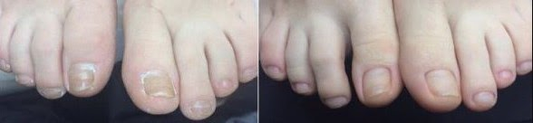
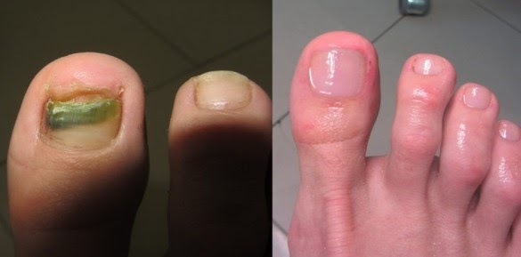
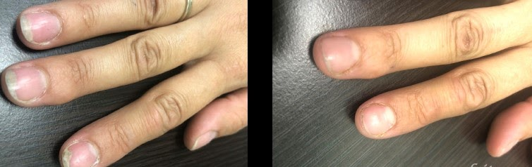

Гъбичките, които разрушиха живота ми: как загубих жена си и здравето, но успях да се измъкна! Споделам ви опита си

Здравейте, казвам се Стефан и исторята ми възможно ще ви накара да се ужасите, но аз почти загубих живота си заради обикновени гъбички. Как това е възможно може би ще попитате. Аз сам никога не съм си помислял, че заради такава дреболия може да се провали живот.
Всичко започна с това, че забелязах удебеляване на ноктите. Първоначално не обърнах голямо внимание, но с времето стана по-зле, започна да ме сърби и да ми почервенява кожата на стъпалата. Тогава реших да отида на лекар и разбрах че това е онихомикоза, а казано на по-прост език – гъбички.
Не знам къде съм успял да се заразя. Може би в басейна, а може и в банята на фитнеса, може и някъде другаде да е било. Там, където има повишена влажност и много хора, задължително има и гъбички.
Между другото, знаете ли, че 80% от хората носят гъбички по кожата си. Те могат да не го забелязват, но само да им отслабне имунитета, например по време на настинка, гъбичките веднага се проявяват и с такава голяма сила!
Гъбичките – най-силния враг на нашето здраве!
Много хора подценяват гъбичната инфекция, но лекар ми обясни, че болестта не само е заразна, но и много опасна. В напреднал стадий онихомикозата може да стигне до възпаление на меките тъкани около ноктите, което често води до вътрешни наранявания и до ампутация на палеца или дори няколко! А ако инфекцията стигне до кръвта през цепнатините – това води до сепсис и ампутация на крака!
Мен това, ако трябва да съм честен, ме наплаши и аз осъзнах опасността от състоянието, в което се намирам. Външните прояви са нищо по сравнение с това какво могат да доведат гъбичките.
Докторът ми изписа много лекарсва, но те не бяха евтини, затова се ограничих само с 1 мехлем и това беше голяма грешка. Този мехлем не ми помогна, даже сякаш сърбежа се усили, появи се неприятна миризма, кожата на стъпалата ми започна да се удебелява и да се напуква, ноктите ми пожълтяха и започнаха да изглеждат просто ужасно.
Ако знаете, че имате подобни симптоми, искрено ви моля да не отлагате, а да започнете лечението преди това да доведе до по-сериозни осложнения!
Как гъбичките провалиха живота ми
Разбира се, това добавяше много дискомфорт. Аз не можех да спя по нощите, за близост с жена ми и дума не ставаше, неприятна и беше миризмата от краката ми, тя ме помоли да спя в гостната на дивана.
Аз постоянно ходих нервен, краката ме сърбяха и дори най-скъпите лекарства не помагаха. Аз дори пробвах народна медицина, пробвах да слагам всякакви лечебни листа и си правех ванни за крака. Но без резултат за съжаление.
С жена ми започнахме да се караме, спряхме да спим заедно и отношенията бяха по-зле от всякога. Започнах да пия, за да заглуша сърбежа и болката от пукнатините по петите ми. Понякога бях толкова силно отчаян, че не исках да живея повече…
Реших да отида при друг доктор в по-скъпа клиника. Там веднага ми предложиха да премахна ноктите и ми назначиха други процедури. Това ми костваше много прилична сума!
Процедурата, признавам си, не беше никак приятна. Хората със слаби сърца да не гледат, но тва го чака всеки, който допусне развитието на заболяването!
Раните трудно зарастваха. Болеше ме нокътното легло. Надявах се, че гъбичките най-накрая ще ми минат и първо ми се подобри състоянието, но след 2 месеца почувствах силна болка, появи се гной и силна неприятна миризма.
Разбрах, че всичко е сериозно, когато вдигнах температура, чувствах се ужасно и ми се струваше, че умирам.
Отидох отново на лекар и разбрах, че имам възпаление. Назначиха ми курс на лечение с антибиотици, едвам оцелях, мислех си че това е края.
С жена ми окончателно се скарахме и приехме решението да живеем разделно временно. Аз я разбирах, прото и беше неприятно да е наблизо, да усеща миризмата и да ми вижда ужасните крака, то на мен ми се повдигаше – не знам на нея какво и беше. Останах съвсем сам с проблема си. Появи ми се страх от лекари. Никакъв ефективен метод не намерих, ставаше ми все по-зле.
Просто ми писна в един момент, престанах да се мажа с мехлемите, които ми изписаха и всичко се върна по местата си. Нокътя ми си порасна дебел и жълт, появиха се пак напуканите крака с кръвоизливи, миризмата беше още по-неприятна.Някакво време аз просто не правех нищо, а само гледах как проклетите гъбички разрушават живота и здравето ми.
Бях отчаян, не вярвах, че нещо ще ми помогне и ще мога да живея пълноценно както преди. Аз не цених живота си и се държах небрежно към тялото си и здравето си, за което платих висока цена!
Спаси ме случаен разговор със стар приятел, когото срещнах случайно на улицата. Не се бяхме виждали от години и той ме покани на вилата си уикенда. С удоволствие отидох – вече няколко месеца с никого не общувах и водех затворнически живот.
Приятеля ми предложи да пробваме сауната, но аз вежливо му отказах. Нямаше как да измислям и да лъжа, така че ми се наложи да му призная проблема си. Разказах му как се мъча, че поради гъбичките жена ми живее разделно и че живота ми е заприличал на истински ад.
На мое удивление, той вместо да ме утешава – ми каза малко да почакам и се качи в спалнята си. След няколко минути се върна, като в ръката си държеше тубичка с крем.
- - Ето, дръж – каза ми той. Само това убива гъбичките, нищо друго няма да ти помогне.
Това беше крем . Приятеля ми разказа по-подробно как е минал през подобен цикъл с множество лекарства, които само му развалили здравето и черния дроб в частност. А в крайна сметка му е помогнал този крем. За него не се знае много в Европа, но в САЩ и Канада е известен като най-ефективното лекарство срещу гъбички по ноктите и кожата на краката.
- премахва всички известни и опасни гъбични инфекции;
- премахва сърбежа, болката и дразненето;
- 100% дезинфекцира;
- предпазва от разпространяването на гъбичките;
- възстановява клетките, които са повредени от инфекцията;
- премахва неприятните миризми, предизвикани от бактериите;
- кожата получава необходимото овлажняване и не се образуват повече пукнатини.
Но първоначално не бях сигурен, че този крем ще ми помогне и вече бях достатъчно разочарован от лекарствата и лекарите, похарчих огромни суми за лечението си, но освен варварските процедури по премахването на ноктите и безполезни лекарства, никаква помощ не получих.
Обаче нямаше какво повече да губия и реших да се възползвам от съвета на моя приятел, взех неговия отворен крем и започнах да го ползвам два пъти дневно, като го нанасях на кожата на краката си и го втривах.
Вече след 20 минути от нанасянето изпитвах приятни усещания – преставаха да ме сърбят стъпалата, крема охлаждаше кожата ми, най-накрая успях да си отдъхна и просто да прекарам една приятна вечер в гледането на филм.
Сутрин забелязах, че кожата ми стана по-мека на допир, цепнатините бяха по-малко. Учуди ме, но и ме зарадва едновременно. Продължих да ползвам крем. Но беше малко и го потърсих в интернет, намерих официалния сайт, където се продава и поръчах няколко опаковки, понеже имаше намаление и цената беше много добра.
Мазах се в продължението на два месеца и през това време краката ми се преобразиха! Кожата на стъпалата беше мека, ноктите придобиха нормален цвят, за сърбежа и паренето аз напълно забравих! Левитирах! Изпитвах такава лекота в краката, чувството беше невероятно! Получаваше ми се да се наспивам, вече не бях нервен, върна ми се хубавото настроение! Най-накрая живота ми стана пълноценен.
Можех да поканя хора на гости или сам да отида без да се притеснявам за миризливите си крака. Дори започнах да се запознавам с нови жени! А също така забелязах, че краката ми спряха да се изпотяват така! Това е просто страхотно – понеже гъбичките се размножават именно във влажна среда.
Аз съм безкрайно благодарен на приятеля си, понеже ми показа крем и буквално ми върна живота!
Този крем стана истинско спасение за мен! Не ми е лесно да споделям своята история, сякаш отново я преживявам и пак става част от живота ми. Но съм много щастлив, че мога да предам опита си и да бъда полезен за хора в нужда. Много ще съм горд, ако дори помогна на поне един човек да си върне здравите крака!
Подробна информация за това удивително лекарство можете да прочетете на официалния сант на крем . Там също можете да го поръчате по най-ниската цена! Побързайте докато действа намалението!
Коммнтари:
Скъпи Стефан, това е много печална история. Много жалко, че си минал през този кръг от несгоди. Но се радвам, че сега си наред, браво на теб!
Сблъсках се със същия проблем, започна с пожълтяването на нокътя. Много бързо се разпространиха гъбичките и на другия крак. Изглеждаше отвратително. Не отидох на лекар, понеже реших, че ще се справя с лечението сам. Пробвах различни народни средства, но нищо не помогна. След това разбрах в един форум за . Много го хвалеха и се възползвах от линка и поръчах през интернет. Крем се оказа много ефективен и успях да се излекува, без да харча една камара пари! 
Мъжа ми също е болен. Ние пробвахме какво ли не. Не знаех как да му помогна, а той много страдаше. Ноктите на краката му буквално се ронеха, имаше пукнатини и силен сърбех. Не можеше да спи. А лекарства той не може да пие – има алергия, затова крем с натурален състав беше единствения изход от ситуацията. Препоръча ни го съседа – той е лекар. А другите лекари не споменаваха този крем. Може би просто са искали да ни вземат парите? Сега състоянието на мъжа ми е много по-добре и продължаваме да използваме крем .
Да! Наистина работи, само този крем ми помогна, нищо друго не помагаше. Отлично средство срещу гъбички! А на дъщеря ми успях да излекувам лишеи с !
Това наистина е страшно, не мога да си представя. Не трябва да се стига до там. Аз също имам гъбички на начален стадий, но вече си поръчах крем по линка, който предоставихте.
И аз се заразих с гъбички в душа във фитнеса. Това е ужасно състояние, когато те сърбят до невъзможност краката, а ноктите ти стават едни такива грозни. Тогава самооценката ми пада и може да се забрави за личния живот. Аз дължо се опитвах да третирам гъбичките със скъпи препарати, но винаги се връщаха. После разбрах за крем и най-накрая успях да се излекувам напълно. 
Никога не съм си мислел, че гъбичките може да доведат до такива последствия! Ние наистина ги подценяваме!
Много години вече страдам от микоза. Лекарите ми изписаха най-различни препарати, но не ми се получава да преборя микозата. Болестта постоянно се връща. Благодаря ви за препоръката, задължително ще пробвам крем ви.
А аз си развалих здравето с лекарствата. Те всичките са толкова токсични и имат странични ефекти, че аз в крайна сметка си навредих на черния дроб. Но успях да намеря вярното решение и да се справя с гъбичките, с помощта на и любимата ми сестра, която разбра за него по телевизията и ми разказа.
На чичо ми така му отрязаха пръстите на краката. Първо имаше гъбички, после прерасна в бактериална инфекция и пръстите му почерняха и ги отрязаха.
Ужа! Хора, пазете си здравето и реагирайте навреме!
Благодаря, че открито говориш за това, мисля че ще помогне на много хора!
Благодаря за препоръчката, вече поръчах . Мъча се с гъбички вече от години и само си троша парите на вятъра…
Баща ми също страдаше от това неприятно заболяване. Имаше от всичко: сърбеж, парене и неприятна миризма. Помогна му само . Бързо се излекува и сега знаем как да третираме микозата и го препоръчваме на приятели. Задължително пробвайте, със сигурност ще помогне!
А аз имах на ръцете, също успях да го излекувам с този крем, бързо ми мина. Но бързо реагирах, нямах такива страшни симптоми.
Включвам се към положителните отзиви. И на мен ми помогна да се излекувам от гъбички . Той се справи само за месец. А също от голямо значение беше, че е напълно натурален, защото другите лекарства вредят на здравето.